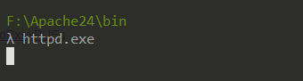
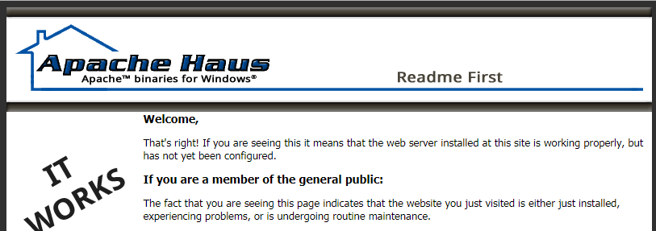
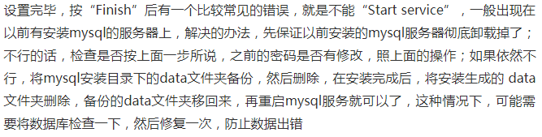
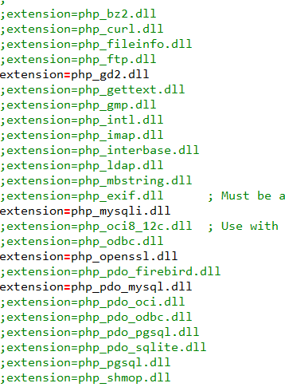

关于PHP开发环境这一块，网上有很多的集成环境可以使用，eg. WampServer，XAMPP，PhpStudy，Appserv ...用起来也很方便（但是我并没有比较过哪个更好用一点），但是呢，比较喜欢瞎折腾，就是想手动搭建一个环境，以前也尝试过，失！败！了！了！
准备工作：
下载好需要的东西
Apache：http://httpd.apache.org/download.cgi （官网）
MySQL：https://www.mysql.com/downloads/ （官网）
PHP：https://www.php.net/downloads.php （官网）
（Apache+MySQL+PHP）（百度网盘）
链接：https://pan.baidu.com/s/1j8hDlrPNriEgxiRxsxPUFg
提取码：mdrb
Apache的安装
好像我下载的就是一个压缩包，解压一下就好了。（在运行的时候可能会提示缺少运行库，下载安装就可以用，并且Apache下载页面也有相关运行库的链接）
在安装完成后，打开命令行，进入Apache安装目录的bin目录下，输入httpd.exe，然后在浏览器地址栏中输入 localhost 回车，出现下面的界面，证明安装成功。


想要结束运行，按下Ctrl+C即可终止运行。
PHP的安装
也是压缩包，PHP和Apache的安装就需要多说了，很简单。
MySQL的安装（没有图了，全凭想像）
运行安装程序，然后就是下一步、下一步……要是想修改安装目录的话，在Choose Setup type 时选择 Custom，即可进行更改。然后在进行到字符集选择时，选择utf-8。我是只改了这两个地方（别的……看个人需求吧），只是执行到最后一步可能会出现下面的问题（摘自百度）

我也遇到了，只是我的解决办法比较简单粗暴，直接重装系统了……
配置
首先是Apache的配置（位置：Apache安装目录/conf/httpd.conf）：
添加下面的内容
LoadModule php7_module "F:/php7/php7apache2_4.dll"
PHPIniDir "F:/php7"
AddType application/x-httpd-php .php .html .htm修改DocmentRoot为自己的网站目录 eg. D:/XXX/XXX
修改Directory与DocmentRoot相同
PHP的配置
复制一份PHP安装目录下的 php.ini-development 或者 php.ini-production 重命名为 php.ini ，修改里面的内容：
1 修改 extension_dir 为 "PHP安装目录/ext"（就是ext文件夹的路径）
2 按个人需要开启模块

3 修改时区：date.timezone 为：Asia/Shanghai
然后就好了……大功告成